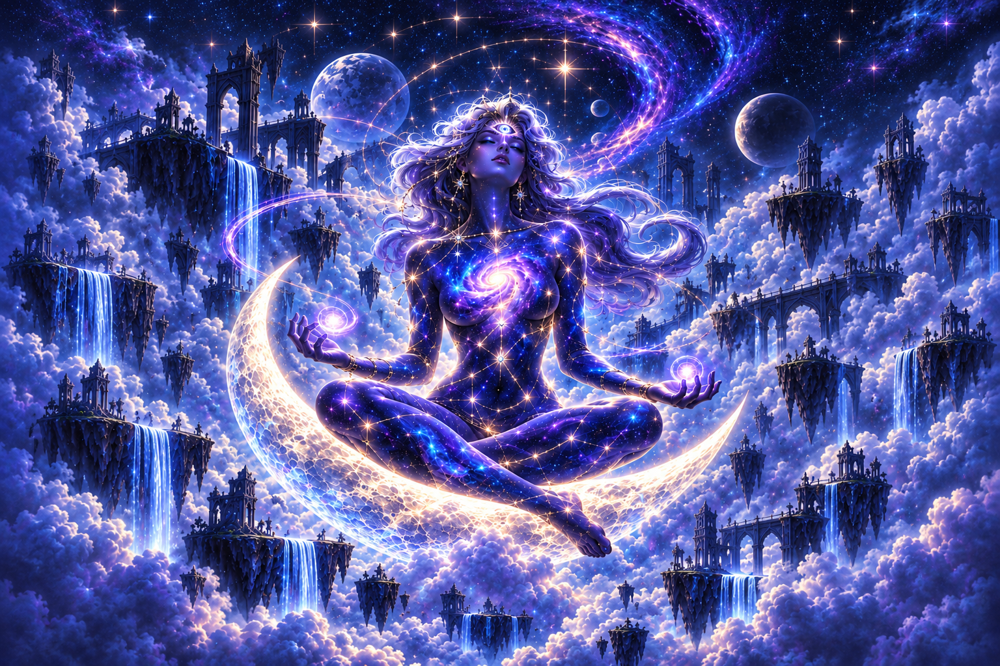
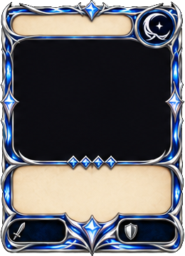

Il Sogno Lucido
Sai di sognare, e il sogno ti obbedisce.
Mente lucida: il vantaggio di fazione avversario non si applica contro di lei.
Attacco 5
Difesa 7
In Dreamscape collezioni creature digitali e costruisci mazzi da 20 carte. Ogni creatura appartiene a una fazione e ha due valori, attacco (ATT) e difesa (DIF). Può avere anche un effetto che si attiva nel momento indicato sulla carta.
La strategia sta nella scelta delle creature. All’inizio della partita il gioco mescola i mazzi, poi pesca e risolve gli scontri automaticamente. Puoi provare un mazzo in una partita rapida, sfidare un amico o giocare in classificata per il tuo punteggio.


Sai di sognare, e il sogno ti obbedisce.
Mente lucida: il vantaggio di fazione avversario non si applica contro di lei.
Attacco 5
Difesa 7
Ti è mai capitato di accorgerti che stavi sognando? I Dreamweaver imparano a riconoscere quell’istante. È lì che trovano la Soglia, un luogo tra veglia e sonno fatto di porte socchiuse e luce che filtra dalle finestre. Da qui partono le loro sfide.
Nel Dreamscape restano le cose che le persone si portano a letto. Il pensiero di un messaggio rimasto senza risposta, il sollievo di tornare a casa, il ricordo di una stanza d’infanzia. Ogni traccia può depositarsi come un Frammento. Quando diventa abbastanza intenso, il Frammento prende forma e nasce una creatura.
Le regioni del Dreamscape cambiano confini ogni notte. I Dreamweaver raccolgono le creature che vi incontrano e le legano nei loro mazzi. Ogni sfida sposta un poco la Trama, l’equilibrio fra desideri, paure e ricordi. Se la Trama cede, la paura tiene svegli, il desiderio allontana dalla realtà e il passato diventa un luogo da cui è difficile uscire.
I giardini galleggiano sopra le nuvole e, tra le città sospese, i fari indicano ancora la via di casa. Qui prendono forma desideri e possibilità. A rappresentare Dreams è Il Sogno Lucido, il Lord della fazione.
Le stanze perdono le porte, le scale scendono nel buio e il pavimento può sparire sotto i piedi. Qui prendono corpo paure familiari, come perdere il controllo o ritrovarsi davanti a qualcosa che si teme di riconoscere. Il Lord di Nightmares è L’Uomo Senza Volto.
Negli orologi fermi è sempre la stessa ora. Tra fotografie e aule vuote, un dettaglio basta a riportare in superficie qualcosa che sembrava perduto. A custodire questi luoghi è La Custode del Tempo Fermo, la Lord di Memories.